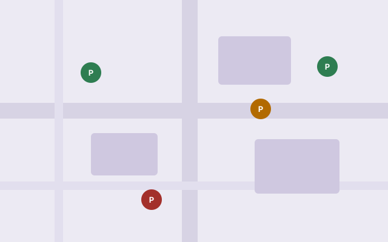

Report a lot's availability
Just drove past a lot? Share what you saw so the next Hokie knows what to expect. Your report updates the lot's live count immediately.
Pick a lot on the map

Just drove past a lot? Share what you saw so the next Hokie knows what to expect. Your report updates the lot's live count immediately.
